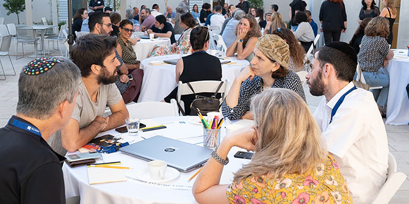
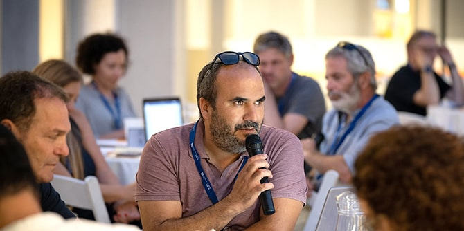

 צילום: סימנים הפקות
הנחת העבודה של היחידה היא שעלינו להכיר לעומק ולרוחב את מגוון הבוגרות והבוגרים כדי שנוכל להציע להם שותפות רלוונטית ובעלת ערך. במהלך השיחות האלו למדנו על האופן שבו הבוגרים תופסים את הקרן ואת התקופה שחוו כאן, על מעשיהם היום וגם על הציפיות והרצונות שלהם מהיחידה. השיחות האלו, לצד שיחות עם בעלי עניין נוספים – הנהלת הקרן, מנהלי תוכניות ואנשי סגל – סייעו בידינו לגבש את תוכנית העבודה שלנו לשנה הבאה.
מפגשי "הזמנה לשיחה" שהתקיימו בקיץ 2021 נערכו כחלק מאותה תפיסה שלפיה הבוגרות והבוגרים הם שותפים מרכזיים בעיצוב ובגיבוש דרכה ואופן פעולתה של היחידה, ואפשרו לנו להקשיב לצרכים ולרצונות של הבוגרים והבוגרות באופן ישיר.
לצד תכלית זו, היו למפגשים כמה מטרות נלוות: הנכחת היחידה בתהליך של "השקה שקטה", גיוס "מאמצים מוקדמים", יצירת עניין וסקרנות וכן הנחת תשתית לתחילתה של מערכת יחסים חדשה או מתחדשת בין היחידה לבין הבוגרות והבוגרים.
בתחילת חודש יולי נשלחה הזמנה אישית לכלל הבוגרות והבוגרים להשתתף באחד מארבעה אירועים שהתקיימו בארבעה מוקדים: ירושלים, תל אביב ומרכזי מנדל בנגב ובצפון. 168 בוגרות ובוגרים מכלל תוכניות הקרן נענו להזמנה והגיעו למפגשים.
 צילום: סימנים הפקות
מהלך מפגשי השיח
המפגש החל בהיכרות בין בוגרות ובוגרים מכלל התוכניות. עם הגעתם התיישבו הבוגרים לשולחנות שחולקו מראש על-ידי צוות היחידה, והקדישו את החלק הראשון לשיחה סביב השולחן. לאחר מכן שיתפו בזוגות חוויות וזיכרונות מתקופת הלימודים. בחלקו השני של המפגש הם התבקשו לגבש ולהעלות על הכתב צרכים וציפיות לנוכח הקמת היחידה מחדש.
המפגשים נמשכו כשלוש שעות ובחלק מהמקרים גלשו אל מעבר לכך, בשיחות אישיות בין בוגרות ובוגרים ששמחו מאוד לשוב ולהיפגש. ניכר היה כי קבוצות השיח ההטרוגניות יצרו נקודות מבט מגוונות והציפו צרכים ורצונות שונים.
מה למדנו?
מניתוח ועיבוד של הטקסטים שכתבו הבוגרים במהלך המפגשים עלו כמה תכנים בולטים:
-
הצורך המובהק ביותר שעולה הוא מה שהבוגרים תיארו כ"חיבורים". רבים מהם ציינו באופנים שונים את הצורך בחיבורים, רישות, נטוורקינג, הנגשת מידע על בוגרות ובוגרים ממגוון התוכניות, ויצירה וביסוס של רשת מקצועית-חברתית.
- צורך חזק נוסף שהבוגרים העלו הוא המשך של פיתוח מקצועי ותהליך למידה, ובמיוחד ב"רוח מנדל", כלומר באופן מעמיק המשלב בין פילוסופיה לפרקטיקה, לימוד ביקורתי ומעורר מחשבה.
- צורך נוסף שעלה הוא קבלת ליווי (מנטורינג) אישי-מקצועי, בדומה למודל שנהוג בבית ספר.
- בהיבטים של תוכן, רוב ניכר מהבוגרות והבוגרים ציינו את נושא השסעים/שבטים/פילוג וכיו"ב כאתגר הגדול ביותר שלמולו ניצבת כיום החברה הישראלית. הנושא השני שעלה הוא אתגר שוויון ההזדמנויות, בעיקר בחינוך אך לא רק, ואחריהם הצורך בהובלת שינוי עומק במערכת החינוך.
חומר הגלם הזה שימש אותנו כבסיס לחשיבה ולדיוק תוכנית העבודה וכן לחשיבה נוספת על תפקידה של היחידה וייעודה.
מפגשי השולחנות העגולים היו משמעותיים בביסוס התקשורת שלנו עם הבוגרות והבוגרים וביטאו התחדשות ותחילתו של דיאלוג של היחידה עמם. למפגשים הגיעו בוגרות ובוגרים ממגוון תוכניות ומחזורים, ותיקים וצעירים, שחלקם לא היו בקשר עם הקרן שנים ארוכות. היה משמח לראות שבמהלך המפגש התקיימו דיונים פוריים, חלקם סוערים, נעשתה חשיבה מעמיקה סביב השולחנות וניכרה מחויבות והשקעה במשימה. רבים בירכו וחלקם אף התרגשו מהמעמד של חזרה לקשר משמעותי עם קרן מנדל.
 צילום: סימנים הפקות
צילום: סימנים הפקות
{kind=link}
{kind=link}